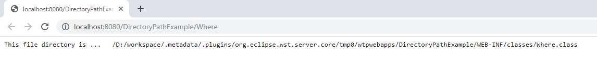
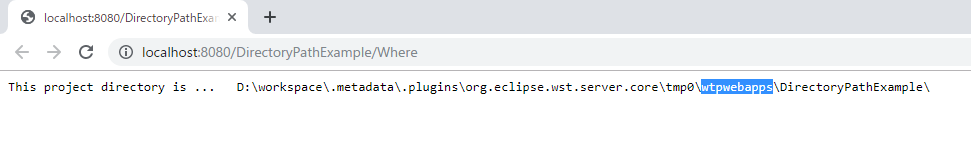

[Java] サーブレット環境で現在の実行ディレクトリを取得する方法
こんにちは。明月です。
この投稿はJavaのサーブレット環境で現在の実行ディレクトリを取得する方法に関する説明です。
プログラムを作成する時に現在のディレクトリを知る時があります。特にEclipse環境で実行する時にはコンパイルして実行させる場所 を探しにくいので開発する時に困る時があります。
例えば、環境ファイルを読み込む時やプロジェクト仕様として各種ファイルやテンプレートを読み込む時に必要です。
その時にローカルディレクトリを探す方法は２つあります。
実行しているクラスのファイルの場所で探す方法です。
import java.io.IOException;
import java.io.PrintWriter;
import java.net.URL;
import javax.servlet.ServletException;
import javax.servlet.annotation.WebServlet;
import javax.servlet.http.HttpServlet;
import javax.servlet.http.HttpServletRequest;
import javax.servlet.http.HttpServletResponse;
// Urlの「/Where」の場合に呼出す。
@WebServlet("/Where")
public class Where extends HttpServlet {
// メソッドGET方式で接続する時に呼出す関数。
protected void doGet(HttpServletRequest request, HttpServletResponse response)
throws ServletException, IOException {
// WebResponseから応答bodyのストリームを受け取る。
PrintWriter writer = response.getWriter();
// 出力する。
writer.append("This file directory is ... ");
// 現在、実行されている(Where.class)クラスの位置を探す。
URL url = Thread.currentThread()
.getContextClassLoader()
.getResource(this.getClass().getName() + ".class");
// 出力する。
writer.append(url.getPath());
}
// メソッドPOST方式で接続する時に呼出す関数。
protected void doPost(HttpServletRequest request, HttpServletResponse response)
throws ServletException, IOException {
// メソッドGET方式と同じ処理になる。
doGet(request, response);
}
}

Threadクラスで現在に動いているスレッドのクラスの場所を探すと現在の実行パスを探すのが出来ます。
上の関数の処理では問題ないですが、Lambda式やマルチスレッドなどで呼出すと結果が可笑しくなる可能性があります。その時に「Thread.currentThread().getContextClassLoader()」ではなく、「this.getClass().getClassLoader()」を呼出して取得ができます。
でも全てLoaderを通って取得するから、マルチスレッドなら正確に取得出来ない可能性はあります。(可能性といってもすごく低いです。)
我々はサーブレットを作っているのでサーブレットのcontextを利用して取得する方法もあります。
import java.io.IOException;
import java.io.PrintWriter;
import javax.servlet.ServletException;
import javax.servlet.annotation.WebServlet;
import javax.servlet.http.HttpServlet;
import javax.servlet.http.HttpServletRequest;
import javax.servlet.http.HttpServletResponse;
// Urlの「/Where」の場合に呼出す。
@WebServlet("/Where")
public class Where extends HttpServlet {
// メソッドGET方式で接続する時に呼出す関数。
protected void doGet(HttpServletRequest request, HttpServletResponse response)
throws ServletException, IOException {
// WebResponseから応答bodyのストリームを受け取る。
PrintWriter writer = response.getWriter();
// 出力する。
writer.append("This project directory is ... ");
// servletContextから現在の実行しているパスを取得する。
String path = getServletContext().getRealPath("/");
// 出力する。
writer.append(path);
}
// メソッドPOST方式で接続する時に呼出す関数。
protected void doPost(HttpServletRequest request, HttpServletResponse response)
throws ServletException, IOException {
// メソッドGET方式と同じ処理になる。
doGet(request, response);
}
}

上の場合はcontextインスタンスから取得するものなので、マルチスレッドやLambda式で間違って取得する問題はありません。
でも、サーブレットクラス(HttpServletを継承したクラス)だけ取得ができることなので一般クラスで現在パスを取得するようには上のLoaderを通って取得する方法しかないです。
私の場合はWebServerを起動する時にインスタンス初期化する方法で「static」タイプの変数に実行パスを格納して使うことでよく使います。
link - [Java] Java servletでインスタンスを初期する方法
ここまでJavaのサーブレット環境で現在の実行ディレクトリを取得する方法に関する説明でした。
ご不明なところや間違いところがあればコメントしてください。
- [Java] Jsonタイプのデータを使う方法(Gsonライブラリ)2020/03/11 00:30:15
- [Java] Base64をエンコード、デコードする方法2020/03/09 10:24:01
- [Java] cmdコマンドを実行するための方法2020/03/06 18:01:10
- [Java] メール(javax.mail)を発送する方法2020/03/05 20:07:49
- [Java] クラス複製(Clonable, Reflection)2020/03/05 00:03:19
- [Java] シリアライズ(直列化: Serializable)2020/03/03 00:03:33
- [Java] StringBuilderとStringBufferの差異2020/03/02 07:52:22
- [Java] Compare関数を使う方法2020/02/29 03:00:00
- [Java] 数字フォーマット(お金表示及び小数点以下表示)2020/02/28 03:00:00
- [Java] サーブレット環境で現在の実行ディレクトリを取得する方法2020/02/27 03:00:00
- [Java] 日本語をユニコードに変換して、ユニコードから日本語に変換する方法2020/02/26 03:00:00
- [Java] コンソールからデータを受け取る方法(System.in)2020/02/25 03:00:00
- [Java] Servlet環境でWebSocket通信中、HttpSessionを取得する方法2020/02/24 07:47:20
- [Java] WebSocketでWeb Sessionを使う方法(Broadcast)とウェブチャットの例2020/02/22 03:00:00
- [Java] WebSocket (ウェブソケット)2020/02/21 03:00:00
- [Project design] プロジェクトを工程(ウォーターフォール vs アジャイル)2021/10/14 18:36:04
- [C#] 51. Reflection機能を使い方 - Method2021/10/14 18:34:21
- [C#] 50. Reflection機能を使い方 - Class2021/10/13 18:34:13
- [C#] 49. Operator(演算子)のオーバーロードを使い方2021/10/12 18:28:42
- [C#] 48. IEnumerableとIEnumerator、そしてyieldキーワード2021/10/11 19:49:33
- [C#] 47. Nugetを使い方(外部ライブラリ)とデータベース(MariaDB(Mysql))を使い方、そしてトランザクション(Transaction)2021/10/08 18:58:57
- [Window] MariaDBをインストールする方法2021/10/08 18:56:05
- [C#] 46. データベース(MSSQL)に接続する方法2021/10/07 18:39:58
- [C#] 45. ネットワークソケット通信(Socket)を使い方2021/10/06 19:06:25
- [C#] 44. ファイル(FileInfo)とディレクトリ(DirectoryInfo)を扱い2021/10/05 19:29:34
- [C#] 43. ストリーム(Stream)とバイナリ(byte[])、エンコード(Encoding)、そしてusingを使い方とIDisposableインターフェース2021/10/04 18:33:04
- [C#] 42. ファイルを扱い(IO)とファイルメタデータ(FileInfo)を使い方2021/10/01 20:10:21
- [C#] 41. Taskクラスとasync、awaitを使い方2021/10/01 18:59:14
- [Javascript ] WebのFull calendar(スケジュールカレンダー)の使い方法2021/07/15 21:35:36
- [Java] 56. Web serviceのサーブレット(Servlet)で初期化作業(properties設定)2021/07/02 17:10:36